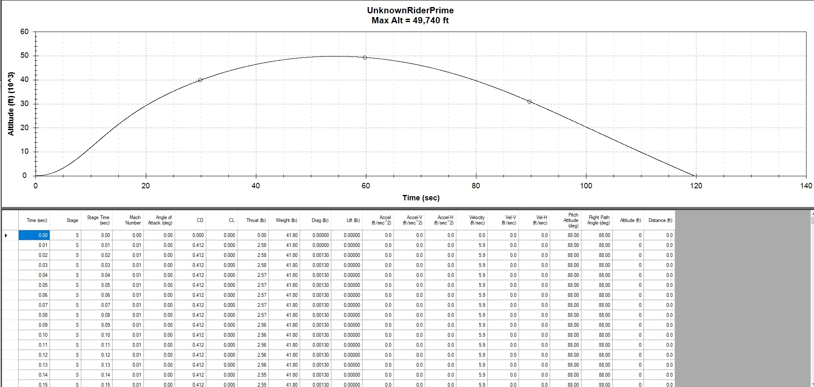

My contribution
Unknown Rider is my independent Level 3 certification project, currently in progress. I am developing the vehicle architecture, aerodynamic and structural analyses, recovery system, avionics integration, and manufacturing plan. I am revising the design following the change from the unavailable CTI N5800 to the AeroTech N1000W.
An unavailable motor changed the design basis.
I am developing Unknown Rider as both my Level 3 certification vehicle and a platform for high-altitude avionics experiments. The original CTI N5800 became unavailable, so I am redesigning around the AeroTech N1000W. That changes the mission profile, and I am revisiting the structure, stability, and recovery requirements together.
The current design has a 4-inch diameter, an overall length of approximately 103 inches, and an estimated mass of 43 pounds. My N1000W simulations target about 50,000 feet and a peak speed near Mach 2. I am updating these performance predictions as the design evolves.
The material choices have to serve more than strength.
I am designing the primary airframe around carbon fiber for stiffness and strength, with fiberglass where radio transparency is needed. A long, 7.2:1 fiberglass nose cone provides space for tracking equipment. I am developing a custom aluminum tip to address the nose region’s thermal and structural demands and contribute forward mass for stability.
I selected 2024-T3511 aluminum stock for the tip and half-inch quasi-isotropic carbon-fiber plate for the fins. The manufacturing plan includes structural epoxy, a fiberglass nose-cone layup, and reinforced fin joints using fillets and overwrap.
The point is to treat stiffness, heating, radio performance, stability, and manufacture as coupled choices. Adding carbon reinforcement indiscriminately would work against the tracker’s radio path; adding forward mass changes stability but also changes the trajectory and recovery loads.
| Area | Approach |
|---|---|
| Aft airframe | Carbon-fiber tube and reinforcing coupler. |
| Forward / avionics region | G12 fiberglass tube and couplers, preserving RF-compatible regions. |
| Nose cone | Fiberglass layup over custom tooling; aluminum tip. |
| Fins | Half-inch quasi-isotropic carbon-fiber plate, bonded and reinforced. |
| Internal interfaces | Aluminum bulkplates, printed components, and standard mounting hardware. |
Updating the model around the new motor.
I use COMSOL, RASAero II, OpenRocket, MATLAB, Simulink, and SolidWorks to examine stability, aerodynamic loading, thermal behavior, structural margins, and recovery. As I revise the vehicle around the new motor, I keep these checks tied to the same configuration so that results from different revisions do not get mixed together.
I am using the trajectory below to define the mission profile and the conditions the airframe and electronics will have to survive. These results guide the ongoing design reviews, fabrication planning, and subsystem integration work.
{kind=link}

Keeping the experimental electronics in context.
I am developing CO₂-based deployment for the high-altitude environment. My recovery architecture started with two BlueRaven flight computers for primary recovery, Atlas as an independent backup and data-acquisition platform, and redundant tracking through GPS and a separate RF path.
As part of the N1000W redesign, I am updating the electronics package to incorporate an Atlas-derived computer called Kronos and a Swift GPS tracker. The additional RF-tracking hardware is deferred while I work through the revised avionics configuration and its interfaces with the recovery system.
The hardware budget includes separate forward and aft deployment systems, a drogue and main parachute, shock cords, swivels, and quick links. I am reconciling those choices with recovery loads, bay packaging, and the configuration that will fly.
A build plan with the expensive decisions visible.
I am using an N1000W bill of materials totaling approximately $10,000, including tax and shipping, to manage quantities, component choices, and procurement status throughout the project.
The largest commitments include the motor hardware and reload, carbon-fiber stock, avionics, and recovery equipment. Separating those commitments makes changes in the mission architecture visible in the budget before they become purchased hardware.
| Item | Budgeted cost |
|---|---|
| RMS98/15360 motor hardware | $1,352.00 |
| N1000W-PS reload | $1,409.00 |
| Carbon-fiber fin stock, two plates | $860.68 |
| Atlas-derived Kronos computer allowance | $1,000.00 |
| Main and drogue parachutes | $568.82 |
| Tax and shipping allowance | $950.23 |
| Complete project budget | $10,000.07 |
My next milestones are to close out the updated configuration and supporting analyses, fabricate and integrate the structure, and validate the recovery and electronics as an assembled system. Hat Trick and Apollyon inform that sequence: the flight computer, mechanical interfaces, pressure paths, and launch procedure have to be evaluated together.
COMSOL · RASAero II · OpenRocket · MATLAB · Simulink · SolidWorks